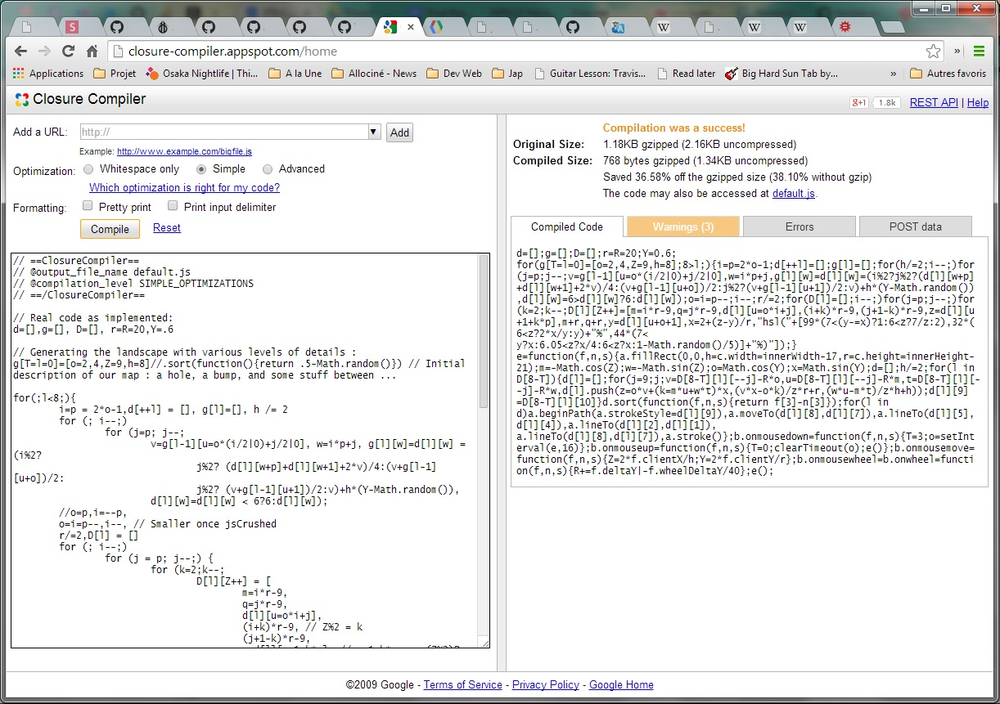
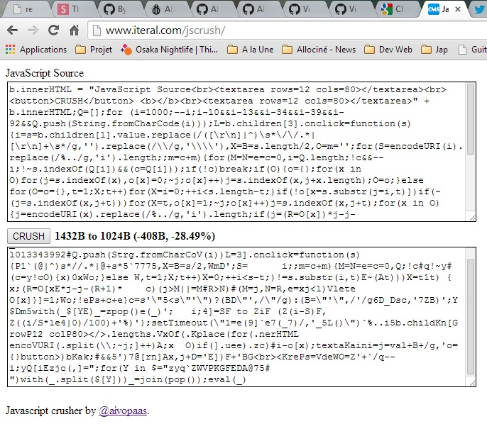
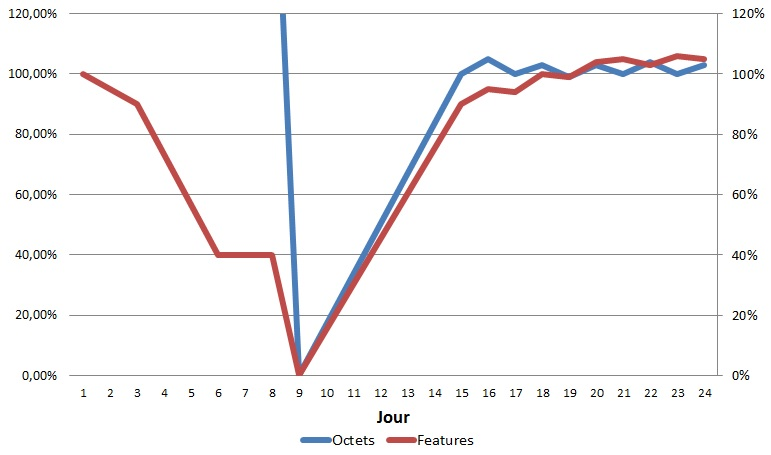

JS1K
Retour d'expérience
Par Benjamin (Bill) Planche
Slides dispo sur github.com/Aldream/presentations
_='dgX=R=r2;Y=.6;
JL=l=0&[TN,5,Z=9,h=8];(D9>l;){i=p*oO;dh/;(
++l]i)(j=p;jv= N@iP|0jP|0],w=i*p+j,
l][w&
&(i%2? *2+
+p]+
/4:(v+ +o
P: +
P:vh@Y-
&6>
]?6:
;o=i=pir/}g;setInterval(m=-Zw=-KZz=Yx=KYb=J;J%290*Tg=[],); (j=1e4;jtw,k=@R-2*ri=l,lL/r+.5|0,p=h,hL/r%1,F=h>p,F=N*i+l]+(
C(
!Cv=F-X*z-3,Um,f=z*v+(I=m*U+w*t)*x,v=(v*x-z*I^H+H,I=(w*U-m*t^W+W,f
<
p=v*2*W+I]
p&f,p=
],F-=t+(p-h*]-(1-h)*
*52,Style="hsla("+[p?25Q+bQ*4:7pA*3Q:FG(u=F-bA:5.2<FA*t/5:6.05<pAQ*2:6<pA:1.6+*.8b*l*i/47*f/3J/13)*17G.6]+")",$I,v,t=u/50+3-T,t)));++J},16)down=0}up}moveZ*X/W,Y=Y/H)}NnX+=f.dE|-f.DE}$0,0,W=c.wV#WVO8,H=c.hB#HB-21W/function(f){Math.;onmousecos(+orandom()=[];
lO][u
]-*F
-F
@
d[wa.fill25@6<=2),--;wheelLO1-X*f.client)+for||(d[u=T/87)
g[
+1
]) j%2?(v#=inner$Rect(&]=@*(A?tBeightCF?p:hEeltaYG"%",Ksin(L=kN=oO-1P/2Q/pVidth^)/f*';for(Y in $='^VQPONLKGECBA@&$#
')with(_.split($[Y]))_=join(pop());eval(_)?
... et avec un peu plus de contexte ?
<!doctype html>
<html>
<head>
<title>JS1k, 1k demo submission [ID]</title>
<meta charset="utf-8" />
</head>
<body>
<canvas id="c"></canvas>
<script>
var b = document.body;
var c = document.getElementsByTagName('canvas')[0];
var a = c.getContext('2d');
document.body.clientWidth; // fix bug in webkit: http://qfox.nl/weblog/218
</script>
<script>
// start of submission //
_='dgX=R=r2;Y=.6;
JL=l=0&[TN,5,Z=9,h=8];(D9>l;){i=p*oO;dh/;(
++l]i)(j=p;jv= N@iP|0jP|0],w=i*p+j,
l][w&
&(i%2? *2+
+p]+
/4:(v+ +o
P: +
P:vh@Y-
&6>
]?6:
;o=i=pir/}g;setInterval(m=-Zw=-KZz=Yx=KYb=J;J%290*Tg=[],); (j=1e4;jtw,k=@R-2*ri=l,lL/r+.5|0,p=h,hL/r%1,F=h>p,F=N*i+l]+(
C(
!Cv=F-X*z-3,Um,f=z*v+(I=m*U+w*t)*x,v=(v*x-z*I^H+H,I=(w*U-m*t^W+W,f
<
p=v*2*W+I]
p&f,p=
],F-=t+(p-h*]-(1-h)*
*52,Style="hsla("+[p?25Q+bQ*4:7pA*3Q:FG(u=F-bA:5.2<FA*t/5:6.05<pAQ*2:6<pA:1.6+*.8b*l*i/47*f/3J/13)*17G.6]+")",$I,v,t=u/50+3-T,t)));++J},16)down=0}up}moveZ*X/W,Y=Y/H)}NnX+=f.dE|-f.DE}$0,0,W=c.wV#WVO8,H=c.hB#HB-21W/function(f){Math.;onmousecos(+orandom()=[];
lO][u
]-*F
-F
@
d[wa.fill25@6<=2),--;wheelLO1-X*f.client)+for||(d[u=T/87)
g[
+1
]) j%2?(v#=inner$Rect(&]=@*(A?tBeightCF?p:hEeltaYG"%",Ksin(L=kN=oO-1P/2Q/pVidth^)/f*';for(Y in $='^VQPONLKGECBA@&$#
')with(_.split($[Y]))_=join(pop());eval(_)
// end of submission //
</script>
</body>
</html>... ?
1024 octets
c'est peu.
Exemple
Ce programme Javascript permet de générer procéduralement des paysages. Ces paysages doivent contenir un relief assez montagneux, ainsi qu'une étendue d'eau. L'utilisateur doit pouvoir se déplacer dans la scène : il peut naviguer autour du paysage en maintenant le clic gauche de la souris et en déplaçant celle-ci, ou s'approcher / s'éloigner à l'aide de la molette. Le paysage se génère continuellement, par ajouts de petites tâches de couleur (plus grosses lors des déplacements pour obtenir plus rapidement un aperçu). A chaque chargement de la page, le contenu doit être différent (génération pseudo-aléatoire). La scène doit être suffisamment détaillée pour donner une impression de réalisme et d'étendue. Dans la même optique, la notion d'illumination doit être simulée, en obscurcissant les zones adéquates. Afin de correspondre au thème printanier du concours, une notion de défilement du temps doit être exprimée. On donnera donc l'impression du passage des saisons grâce à l...
Essence du concours JS1K :
Faire beaucoup avec peu
Code minimaliste / immonde → Programme cool
Avertissements !
Le JS présenté ici n'est pas conforme W3C.
A ne pas reproduire en entreprise.
Peut entrainer TOC, insomnie et troubles de l'attention.
Tenir hors de la portée et de la vue des programmeurs juniors.
Ne pas dépasser la posologie conseillée.
En cas d'effets indésirables, contactez votre lead-developer.
JS1K
Règlement
- Javascript, intégré au template html fourni
- 1024 octets max
- Pas de ressources externes (lib, img, api, ...)
- Cross-browser (récents)
- Doit simplement fonctionner (au diable les best practices)
Template (shim)
<!doctype html>
<html>
<head>
<title>JS1k, 1k demo submission [ID]</title>
<meta charset="utf-8" />
</head>
<body>
<canvas id="c"></canvas>
<script>
var b = document.body;
var c = document.getElementsByTagName('canvas')[0];
var a = c.getContext('2d');
document.body.clientWidth; // fix bug in webkit
</script>
<script>
// start of submission //
SCRIPT
// end of submission //
</script>
</body>
</html>Mon Histoire
Qui suis-je ?
Benjamin (Bill) Planche, aka Aldream
- Etudiant INSA-Lyon
- Spécialités : Web, AI & CG
Contexte
- Fan de JS1K sans jamais participer auparavant
- En année de césure quand JS1K 2013 a été annoncé
- Avais déjà tenté de traduire ce projet Matlab en JS
Elaboration
Première Tentative
ou comment je perdis 2 semaines et toute confiance
Tenter de compresser un script JS codé auparavant
Pourquoi ce fut une erreur ?
- Buggé de base, mal structuré (erreurs de jeunesse...)
- ET SURTOUT, pas adapté aux nouvelles contraintes
Deuxième Tentative
Partir de la Base
- Algo de visualisation 3D
- Algo de génération procédurale
Compression
Comment atteindre 1ko ?
- Jouer sur la syntaxe JS
- Faire bon usage des Maths
- Utiliser des outils de minification/compression
- Supprimer des fonctionnalités si nécéssaire
- Répéter jusqu'à satisfaction
Syntaxe JS
Bible : "Byte-saving Techniques",
wiki de la communauté 140bytes
Variables
-
Adieu
varvar a=0; var b=0; // avant a=b=0 // après -
(ré)utiliser les paramètres de fonctions
function(a){var b=1;...} // avant function(a,b){b=1;...} // après -
Se rappeler qu'assigner une valeur retourne celle-ci
a=this.prop;if(a){...} // avant if(a=this.prop){...} // après
Conditions
-
En cas d'imbrications, penser aux ternaires
if(a){if(b)x=1;else x=2}else x=3; // avant x=a?b?1:2:3; // après -
Tout simplement éviter les
ifif(a)foo() // avant a&&foo() // après if(!a)bar() // avant a||bar() // après -
^pour tester l'inégalité de nombresif(a!=123) // avant if(a^123) // après
Boucles
-
Décrémenter si possible
for (i=0;i<10;i++) // avant for (i=10;i--;) // après -
for>whilewhile(1); // avant for(;;); // après i=10;while(i--){...} // avant for(i=10;i--;){...} // après -
Placer certaines expressions dans le corps du
forfor(i=10;i--;){foo(); bar()} // avant for(i=10;i--;bar(),foo()); // après for(i=10;i--;bar())foo(); // encore après
Divers
- Connaître la précédence des opérateurs
-
Profiter de la coercition des arrays
"rgb("+(x+8)+","+(y-20)+","+z+")"; // avant "rgb("+[x+8,y-20,z]+")"; // après - Inliner au maximum (éviter constantes et fonctions)
- ...
Maths
Nombres
-
Arrondir / Tronquer sans utiliser
Math(nb>0)truncA = Math.floor(a); // avant truncA = 0|a; // après roundA = Math.round(a); // avant roundA = a+.5|0; // après -
Réduire les grands nombres
million=1000000 // avant million=1e6 // après dix=10 // avant dix=9 // après (ca paaaaasse!)
Génération procédurale
Rien n'égale la capacité d'expression et de synthèse des Maths ...- Interpolation
- Géométrie 3D & Transformations
- Conditions par modulo
- ...
Minifiers
Google Closure
Suite compilant du JS afin de l'optimiser et le compacter.
Traitement Post-Closure
-
Supprimer les zéros inutiles
x=0.9 // avant x=.9 // après -
Supprimer le point-virgule final
foo();bar();voila(); // avant foo();bar();voila() // après
JSCrush
Démo pour JS1K 2012 par @aivopaas
Permet de compresser un code déjà minifié
Comment JSCrush compresse:
Cherche le 1er char ASCII libre pour délimiter.
code = "
console.log('Hello-lo!')" → delim = "X"Cherche les éléments répétitifs intéressants
code = "
console.log('Hello-lo!')"→ el = "lo"Split le code en utilisant 2 puis join avec 1.
code = "
console.Xg('HelX-X!')"Ajoute 1+2 au code, et 1 dans une autre chaîne.
code = "
console.Xg('HelX-X!')Xlo", chaineDelim = "X"Répète jusqu'à plus de gain ou de délim.
Comment JSCrush décompresse:
for(Y in $=chaineDelim)with(code.split($[Y]))code=join(pop());eval(code)Pour chaque caractère de la chaîne de délimiteurs:
- Le caractère est utilisé pour split le code.
- Le dernier morceau est pop-é et utilisé pour join à nouveau le code.
Créer des patterns pour JSCrush
-
Limiter et réutiliser les variables intelligemment
ex: si vous utilisez toujoursApour les arrays, etipour les indices, alorsA[i]sera crushé, faisant gagner 3n-7 octets (n nombre d'apparition deA[i]) -
Réarranger les expressions
m=i*r-9;q=r*j-9 // avant m=i*r-9;q=j*r-9 //après - pattern "*r-9;" -
Uniformiser les signatures de fonctions
x=function(a){...}, y=function(b,c){...} // avant x=function(b,c){...}, y=function(b,c){...} // après
RegPack
Outil basé sur JSCrush, un peu plus efficace
Ajoute une étape à la compression :chaineDelim est convertie en une regex plus compacte.
Workflow
3 Phases
Enfance - L'Innocence
1ko ? Laaarge ! 1 ou 2 retouches et ce vieux projet devrait tenir !
Adolescence - La Rage & les Désillusions
1026 octets encore !!?? Bon ben tant pis pour la fonctionalité X...
Maturité - Le Perfectionnisme
J'hésite... Les reflets sur l'eau, tu les préfères en cos(7x+3) ou cos(9x+2)?
Phase 1
Etapes
- Trouver un thème, une idée
- Etudier les démos des précédents concours
- Tester, expérimenter
Objectifs
- Se familiariser avec les diverses notions
- Avoir une idée de la démo visée
Phase 2
Etapes
- Implémente une fonctionnalité (JS lisible)
- Teste
- Minifie, compresse, évalue l'espace restant/manquant
- Répète (beaucoup)
Objectifs
- Avoir une démo pas trop dénudée sous les 1024o
- Ne pas craquer
Phase 3
Etapes
- Cherche des patterns, optimise, modifie, tente des ajouts
- Teste
- Minifie, compresse, évalue l'espace restant/manquant
- Répète (beaucoup)
Objectifs
- Etre satisfait
Outils
Personnellement, pas grand chose...
- notepad ou JSBin
- Chrome + Firefox + Opera
- Closure Online + JSCruch
- Git
... mais il existe des suites pouvant aider ...
- JS1k Tools (Node scripts + Minify / Uglify + JSCrush)
- Grunt pour automatiser le processus
Résultats
Mes démos
Démo alpha - Loom
Démo bis - Morphose
Démo finale - Pointillism
Evolution du code
Effet des étapes de compression
Version jolie & documentée
// Maps:
var mapWithWater=[], map=[], mapFaces=[],
dim = 2, // Size of our square matrix (dim = rows = cols)
SIZE = 20, // Width of our whole square landscape
MID = SIZE/2, // Mid-width, to place the origin
WATER_LVL = 6, // Sea level
BEACH_LVL = 6.04, // Beach level
SNOW_LVL_INC = 7, // Snow level, subtracting the incline (Yeah, sounds strange. See the code lines)
sgmtLength = SIZE, // Length of the sub-squares sides
h=8, // Alterations amplitude
wHeight, wWidth, // Window dim.
angleYaw=angleHead = .6,// Camera orientation
cameraDistance = 20, // Camera distance to the origin
wantMove = 0, // To know which mode is used (3=moving, 0=displaying)
refreshPaint; // Generated by the setTimeOut to refresh the canvas.
map[0]=[2,4,9,8]; // Initial description of our height-map...
// Generating the landscape with an increasing level of details :
for(var l=1;l<9;l++){ // Our most-detailed map (map[8]) will thus be a 257x257 matrix, which means 66049 elements / 131072 faces for our mesh. map[9] is kindda computable, but displaying it almost kills my browser though...
// First we generate the new details by adding points using stochastic interpolation.
var newDim=2*dim-1; // We want to add 1 new element between each couple of them, so the size will increase of dim-1.
mapWithWater[l]=[];
map[l]=[];
h /= 2; // Every iteration, we reduce the "error" amplitude, to generate more subtle alterations.
for (var i=newDim; i--;) for (var j=newDim; j--;) {
// We thus populate the new map from the bottom right element to the top-left. It affects the way we evaluate some elements value if we want to do it in only one step: we can use all the values of the old matrix, but only the values of the new elements which has a bigger index than the current one.
var iMap = i*newDim+j,
iSMap= dim*(i>>1)+j/2|0; // Index of the top-left corner of the square in the smaller matrix.
// JS trick: Math.floor(X) = 0|X if X positive, and X>>Y = 0|(X/(2*Y))
map[l][iMap]=mapWithWater[l][iMap]=
(i%2?
j%2?// Element on an odd row and odd col: it corresponds to a square center, so we populate it as shown in the following ascii schema:
// 2 0 0 with X representing the current element, and the numbers those used to eval. it.
// 0 X 1 It's kind of a mix between the midpoint displacement and the diamond-square algo: we try to reduce the artifacts
// 0 1 0 the 1st algo may generate, without the 2nd step required by the other.
(mapWithWater[l][iMap+newDim] + mapWithWater[l][iMap+1] + 2*map[l-1][iSMap]) / 4
: // Element on an odd row and even col: we give it the avg of the elements on the prev. and next cols:
// 1 0 0 Example
// X 0 0
// 1 0 0
(map[l-1][iSMap] + map[l-1][iSMap+dim]) / 2
:
j%2?// Element on an even row and odd col: we give it the avg of the elements on the prev. and next rows:
// 1 X 1 Example
// 0 0 0
// 0 0 0
(map[l-1][iSMap] + map[l-1][iSMap+1]) / 2
: // Element on an even row and even col: it's one of the square corners, so we just give it the orig. val.:
map[l-1][iSMap]
) + h * (.6 - Math.random()); // And for each element, we add a small error to generate our random landscape. Our constant h controls the ampli. of this error. As h is divided by 2 every iteration, so is this coefficient. The first iterations thus generates the "rough geography" of our landscape while the last ones, with a smaller amplitude, add the details.
mapWithWater[l][iMap] = (mapWithWater[l][iMap] < WATER_LVL)? WATER_LVL:mapWithWater[l][iMap];// To get our flat water surface
}
// Then we make a mesh out of our height map: we take each square defining our map and cut them into 2 triangles, which will become 2 faces of our mesh. Each element, at the position (i,j) of our matrix and with the value z, will generate a 3D-vertex (X=i*r-A, Y=j*r-B, Z=z-C), with (A,B,C) the chosen origin (we take A=B=mapSize/2 and C=0, so the center of the map corresponds to the origin).
// We also use this step to evaluate the color of the faces as we generate them, using their height and a rough evaluation of their inclination as parameters.
dim=newDim--; // We do "newDim--" right now not to repeat "newDim-1" later.
sgmtLength/=2; // We want to increase the level of details of our map, not its size. So with each it., we divide by 2 the distance separating the vertices.
mapFaces[l]=[];
var trId = 0;
// As previously, we iterate desc. The idea is that for each element we iterate on, we evaluate the faces of the square which as for top-left corner this element. So we don't want to iterate on the last column and last row. We thus start at the prev. ones (reason why we decreased newDim by 1):
for (var i=newDim; i--;) {
// X --- o Schema representing the faces extracted from a square. X is the current element.
// | \ |
// o --- o
for (j = newDim; j--;) for (k=2;k--;) { // We iterate 2 times for each square in order to generate the 2 corresponding triangle-faces.
var elId = dim*i+j;
mapFaces[l][trId] = [
// 1st vertex
m=i*sgmtLength-MID,
q=j*sgmtLength-MID,
mapWithWater[l][elId],
// 2nd vertex - the one varying (either corresponding to the element on the next row, or the one on the next col). We use a modulo 2 on the face's id to select the good one.
(i + k)*sgmtLength-MID, // (trId+1)%2 = k. And we don't mind which triangle we generate first, so k is cheaper.
(j + 1-k)*sgmtLength-MID,
mapWithWater[l][elId + 1 + k*newDim], // elId + ((trId%2)? 1 : dim) -> elId + 1 + k*newDim
// 3rd vertex
m+sgmtLength, // m+sgmtLength = (i+1)*sgmtLength-MID
q+sgmtLength, // q+sgmtLength = (j+1)*sgmtLength-MID
mapWithWater[l][elId+dim+1]];
// The following code is a personal mishmash to evaluate the color, found after much tweaking.
// The basic idea was at least to represent:
// - the sea (blue), the vegetation (green), the snow (white), and some intermediate hues (alpine, meadow, beach,...)
// - the luminosity depending on the surface normal and sun position. Since computing the cross product costs too much bytes, only the face incline is used to evaluate it, relative to a fixed implicit sun position.
// For that, the HSL color system is perfect, separating hue and lightness. And for free, by playing with the saturation, we can get some nice vegetation effects! Moreover, when setting "hsl(H,S%,L%)", the values H, S and L don't need to be rounded (would have cost us some bytes - Though I have to check if it influences the performances...).
// So we use the face height (approximated using only 1 vertex), the slope (approximated as shown above), some tweaking, and voila!
var z2 = mapFaces[l][trId][5],
z3 = mapFaces[l][trId][8],
incli = (z2-z3)/sgmtLength; // Really cheap way to get a value proportional to the inclination, since we know the X and Y repartition is regular. At leat, by using the height of the 2nd vertex, we can get a different value for each face.
incCoef = 2+incli, // The tweaking...
zCol = z3 - incCoef; // Useful value to make the boundary snow/vegetation less obvious/more random, and more importantly to somehow reduce the melting-point for poorly-lighted faces. Or how to cheaply simulate the illumination effect on snow.
mapFaces[l][trId].push('hsl('+[ // Using coercion for the ","
99*( // Hue
(WATER_LVL<z2)? 6/z2 // Greenish
: 2 // Blue
),
32*( // Saturation
(WATER_LVL<z2)? incCoef*2/zCol // Ground saturation: medium, depending on the incline|height, giving us different kinds of veget.
: zCol // Water saturation: high
)+'%',
30*( // Lightness
(SNOW_LVL_INC<zCol)? incCoef/.6 // Bright snow
: (BEACH_LVL<z2)? incCoef*incCoef/7 // Normal vegetation
: (WATER_LVL<z2)? incCoef/.6 // Bright sand
: 2-Math.random()/3 // Water with random waves
)
]+'%)');
trId++;
}
}
}
function Paint(){ // See my other demo for details
a.fillRect(0, 0, wWidth=c.width=innerWidth-21,wHeight=c.height=innerHeight-21);
wWidth/=2; // We don't divide the height, to emphasize it.
var sCoord = [],
m=-Math.cos(angleYaw),w=-Math.sin(angleYaw),o=Math.cos(angleHead),x=Math.sin(angleHead),
wantMap = mapFaces[8-wantMove];
for (l in wantMap) {
sCoord[l] = []
for (j = 9;j;) {
var v=wantMap[l][--j]-cameraDistance*o, u=wantMap[l][--j]-cameraDistance*m, t=wantMap[l][--j]-cameraDistance*w;
sCoord[l].push(z = o*v+ (k=m*u+w*t)*x,(v*x-o*k)/z*wHeight + wHeight,(w*u-m*t)/z*wWidth + wWidth);
}
sCoord[l][9] = mapFaces[8-wantMove][l][9]
}
sCoord.sort(function(H,S,L){return H[3]-S[3]}); // Sorting
for (l in sCoord) // I had to choose between only stroking the triangles, only filling them, or sacrificing another feature. I found the holes left by only stroking interesting, like a reminder of those which are part of the universe fabric. ;-)
//a.fillStyle =
a.beginPath(a.strokeStyle=sCoord[l][9]),
a.moveTo(sCoord[l][8], sCoord[l][7]),
a.lineTo(sCoord[l][5], sCoord[l][4]),
a.lineTo(sCoord[l][2], sCoord[l][1]),
a.closePath(),
//a.fill(),
a.stroke()
//refreshPaint=wantMove? setTimeout(Paint,16) : 0;
};
// onclick = function() { // We change the view mode on click.
// clearTimeout(refreshPaint);
// Paint(wantMove^=3);
//}
// Drag to move around:
onmousedown=function(){
wantMove=3;
clearInterval(refreshPaint); refreshPaint=setInterval(Paint,16);
} // We have to clear the Interval in the case the user release the click out of the body.
onmouseup=function(){
wantMove=0;
clearInterval(refreshPaint); Paint();
}
onmousemove = function(H) { // We tie the mouse position with the camera orientation.
angleYaw = 2*H.clientX/wWidth;
angleHead = 2*H.clientY/wHeight
}
onmousewheel=onwheel = function(H) { // Zooming with the wheel, cross-browser solution
cameraDistance += H.deltaY | -H.wheelDeltaY/40;
}
Paint();10000 octets
Version intermédiaire
d=[],g=[], D=[], r=R=20,Y=.6
// Generating the landscape with various levels of details :
g[T=l=0]=[o=2,4,Z=9,h=8]//.sort(function(){return .5-Math.random()}) // Initial description of our map : a hole, a bump, and some stuff between ...
for(;l<8;){
i=p = 2*o-1,d[++l] = [], g[l]=[], h /= 2
for (; i--;)
for (j=p; j--;
v=g[l-1][u=o*(i/2|0)+j/2|0], w=i*p+j, g[l][w]=d[l][w] = (i%2?
j%2? (d[l][w+p]+d[l][w+1]+2*v)/4:(v+g[l-1][u+o])/2:
j%2? (v+g[l-1][u+1])/2:v)+h*(Y-Math.random()),
d[l][w]=d[l][w] < 6?6:d[l][w]);
//o=p,i=--p,
o=i=p--,i--, // Smaller once jsCrushed
r/=2,D[l] = [];
}
zBuffer = [];a.fillRect(0, 0, wid=c.width=innerWidth-17,hei=c.height=innerHeight-21), wid/=2;
setInterval(function(H,S,L){
m=-Math.cos(Z),w=-Math.sin(Z),z=Math.cos(Y),x=Math.sin(Y);
if (T==5) { zBuffer = [];a.fillRect(0, 0, wid=c.width=innerWidth-17,hei=c.height=innerHeight-21), wid/=2; }
for (i = 0; i < 1e4; i++) {
U=Math.random()*20-r; V=Math.random()*20-r;
U0=U/r+.5|0;V0=V/r+.5|0;
UR=U/r%1;VR=V/r%1;
//W=UR*VR*d[8][I=o*U0+V0]+(1-UR)*VR*d[8][I+o]+UR*(1-VR)*d[8][I+1]+(1-UR)*(1-VR)*d[8][I+o+1];
W=UR<VR;
Nx = (d[8][I=o*U0+V0]-d[8][I+o*W+1-W])*(W?UR:VR);
Ny = (d[8][I+o+1]-d[8][I+o*W+1-W])*(!W?VR:UR);
W = d[8][o*U0+V0]-Nx+Ny;
v=W-R*z, u=V-10-R*m, t=U-10-R*w,
pZ = z*v+(k=m*u+w*t)*x;
pY = (v*x-z*k)/pZ*hei + hei;
pX = (w*u-m*t)/pZ*wid + wid;
if (!zBuffer[J=pY*wid*2+pX] || (pZ < zBuffer[J])) {
zBuffer[J] = pZ;
v=d[8][I+(o+1)*(UR+.5|0)];u=d[8][I+1];u-=t=2+(v-u)/r;
a.fillStyle = "hsl("+[32*(6<v?22/v:6),32*(6<v?t*2/u:u)+"%",32*(6<u-Math.sin(R/9)?t/.6:6.05<v?t*t/7:6<v?t:2-Math.random()/3)]+"%)";
a.fillRect(pX, pY, 1, 1);
}
}
//o=T?setTimeout(e,16):0
}, 16);
// onclick=function(H,S,L){clearTimeout(o),e(T^=3)}
onmousedown=function(f,n){T=5};
onmouseup=function(f,n){T=8};
onmousemove=function(H,S,L){if(T==5)Z=2*H.clientX/wid,Y=2*H.clientY/hei}
onmousewheel=onwheel=function(H,S,L){
R+=H.deltaY|-H.wheelDeltaY/40} // Cross-browser solution, but to heavy ... Update: Now we can afford it! \o/2061 octets
Version post-Closure
d=[];g=[];D=[];r=R=20;Y=.6;for(g[T=l=0]=[o=2,4,Z=9,h=8];8>l;){i=p=2*o-1;d[++l]=[];g[l]=[];for(h/=2;i--;)for(j=p;j--;v=g[l-1][u=o*(i/2|0)+j/2|0],w=i*p+j,g[l][w]=d[l][w]=(i%2?j%2?(d[l][w+p]+d[l][w+1]+2*v)/4:(v+g[l-1][u+o])/2:j%2?(v+g[l-1][u+1])/2:v)+h*(Y-Math.random()),d[l][w]=6>d[l][w]?6:d[l][w]);o=i=p--;i--;r/=2;D[l]=[]}zBuffer=[];a.fillRect(0,0,wid=c.width=innerWidth-17,hei=c.height=innerHeight-21);wid/=2;setInterval(function(b,e,f){m=-Math.cos(Z);w=-Math.sin(Z);z=Math.cos(Y);x=Math.sin(Y);5==T&&(zBuffer=[],a.fillRect(0,0,wid=c.width=innerWidth-17,hei=c.height=innerHeight-21),wid/=2);for(i=0;1E4>i;i++)if(U=20*Math.random()-r,V=20*Math.random()-r,U0=U/r+.5|0,V0=V/r+.5|0,UR=U/r%1,VR=V/r%1,W=UR<VR,Nx=(d[8][I=o*U0+V0]-d[8][I+o*W+1-W])*(W?UR:VR),Ny=(d[8][I+o+1]-d[8][I+o*W+1-W])*(W?UR:VR),W=d[8][o*U0+V0]-Nx+Ny,v=W-R*z,u=V-10-R*m,t=U-10-R*w,pZ=z*v+(k=m*u+w*t)*x,pY=(v*x-z*k)/pZ*hei+hei,pX=(w*u-m*t)/pZ*wid+wid,!zBuffer[J=pY*wid*2+pX]||pZ<zBuffer[J])zBuffer[J]=pZ,v=d[8][I+(o+1)*(UR+.5|0)],u=d[8][I+1],u-=t=2+(v-u)/r,a.fillStyle="hsl("+[32*(6<v?22/v:6),32*(6<v?2*t/u:u)+"%",32*(6<u-Math.sin(R/9)?t/.6:6.05<v?t*t/7:6<v?t:2-Math.random()/3)]+"%)",a.fillRect(pX,pY,1,1)},16);onmousedown=function(b,e){T=5};onmouseup=function(b,e){T=8};onmousemove=function(b,e,f){5==T&&(Z=2*b.clientX/wid,Y=2*b.clientY/hei)};onmousewheel=onwheel=function(b,e,f){R+=b.deltaY|-b.wheelDeltaY/40}1377 octets
Version finale pre-JSCrush
d=[];g=[];X=R=r=22;Y=.6;g[J=k=l=0]=[T=o=2,5,Z=9,h=8];for(D=[];9>l;){i=p=2*o-1;d=[];h/=2;for(g[++l]=[];i--;)for(j=p;j--;v=g[l-1][u=o*(i/2|0)+j/2|0],w=i*p+j,g[l][w]=d[w]=(i%2?j%2?(v*2+d[w+p]+d[w+1])/4:(v+g[l-1][u+o])/2:j%2?(v+g[l-1][u+1])/2:v)+h*(Y-Math.random()),d[w]=6>d[w]?6:d[w]);o=i=p--;i--;r/=2}g=[];a.fillRect(0,0,W=c.width=innerWidth-18,H=c.height=innerHeight-21),W/=2;setInterval(function(f){m=-Math.cos(Z),w=-Math.sin(Z),z=Math.cos(Y),x=Math.sin(Y),b=Math.cos(J/87);J%200*T||(g=[],a.fillRect(0,0,W=c.width=innerWidth-18,H=c.height=innerHeight-21),W/=2);for (j=1e4;j--;t=k-11-X*w,k=Math.random()*(R-2*r),i=l,l=k/r+.5|0,p=h,h=k/r%1,F=h>p,F=d[u=o*i+l]+(d[u]-d[u+o*F+1-F])*(F?p:h)+(d[u+o+1]-d[u+o*F+1-F])*(!F?p:h),v=F-X*z-3,U=k-11-X*m,f=z*v+(I=m*U+w*t)*x,v=(v*x-z*I)/f*H+H,I=(w*U-m*t)/f*W+W,f+1<g[p=v*2*W+I]||(g[p]=f,p=d[u+o+1],F-=t=2+(p-h*d[u]-(1-h)*d[u+o])*52,a.fillStyle="hsla("+[25*(6p?25/p+b/p*4:7),25*(6<p?t*3/p:F)+"%",(u=25*(6<F-b?t:5.2<F?t*t/5:6.05<p?t/p*2:6<p?t:1.6+Math.random()*.8)+b*Math.cos(l/87)*Math.cos(i/47*Math.cos(f/3)+J/13)*17)+"%",.6]+")",a.fillRect(I,v,t=u/50+3-T,t)));++J},16);onmousedown=function(f){T=0};onmouseup=function(f){T=2};onmousemove=function(f){T||(Z=2*f.clientX/W,Y=f.clientY/H)};onmousewheel=onwheel=function(f){T||(X+=f.deltaY|-f.wheelDeltaY/87)}1288 octets
Version finale post-JSCrush
_='dgX=R=r2;Y=.6;
JL=l=0&[TN,5,Z=9,h=8];(D9>l;){i=p*oO;dh/;(
++l]i)(j=p;jv= N@iP|0jP|0],w=i*p+j,
l][w&
&(i%2? *2+
+p]+
/4:(v+ +o
P: +
P:vh@Y-
&6>
]?6:
;o=i=pir/}g;setInterval(m=-Zw=-KZz=Yx=KYb=J;J%290*Tg=[],); (j=1e4;jtw,k=@R-2*ri=l,lL/r+.5|0,p=h,hL/r%1,F=h>p,F=N*i+l]+(
C(
!Cv=F-X*z-3,Um,f=z*v+(I=m*U+w*t)*x,v=(v*x-z*I^H+H,I=(w*U-m*t^W+W,f
<
p=v*2*W+I]
p&f,p=
],F-=t+(p-h*]-(1-h)*
*52,Style="hsla("+[p?25Q+bQ*4:7pA*3Q:FG(u=F-bA:5.2<FA*t/5:6.05<pAQ*2:6<pA:1.6+*.8b*l*i/47*f/3J/13)*17G.6]+")",$I,v,t=u/50+3-T,t)));++J},16)down=0}up}moveZ*X/W,Y=Y/H)}NnX+=f.dE|-f.DE}$0,0,W=c.wV#WVO8,H=c.hB#HB-21W/function(f){Math.;onmousecos(+orandom()=[];
lO][u
]-*F
-F
@
d[wa.fill25@6<=2),--;wheelLO1-X*f.client)+for||(d[u=T/87)
g[
+1
]) j%2?(v#=inner$Rect(&]=@*(A?tBeightCF?p:hEeltaYG"%",Ksin(L=kN=oO-1P/2Q/pVidth^)/f*';for(Y in $='^VQPONLKGECBA@&$#
')with(_.split($[Y]))_=join(pop());eval(_)1024 octets
Version finale post-RegPack
for(_='Math.__sin(^)+QQ"%",PeltaYOF?p:hNeightC?tB*(A]=@a.fill Rect(
=inner
j%2?(v
])+1g[/87)function(f){=Td[u||(forf.client=k-11-X*wheel--;),=2
25A6<
d[w +o]-*F-FAl-1][u=[];_random()_cos(;onmouse
0,0,W=c.width
Width-18,H=c.hC
HC-21W/
dgX=R=r
2;Y=.6;J=k=l=0@[T=o
,5,Z=9,h=8];(D9>l;){i=p
*o-1;dh/
;(++l]i)(j=p;jv==oAi/2|0Qj/2|0],w=i*p+j,l][w@ @(i%2?
*2+ +p]+ /4:(v++o/2:
+/2:vQhAY- @6> ]?6: ;o=i=pir/
}g;setInterval(m=-Zw=-^Zz=Yx=^Yb=J;J%200*Tg=[],); (j=1e4;jtw,k=AR-2*ri=l,l=k/r+.5|0,p=h,h=k/r%1,F=h>p,F==o*i+l]+(NQ(!Nv=F-X*z-3,Um,f=z*v+(I=m*U+w*t)*x,v=(v*x-z*I)/f*H+H,I=(w*U-m*t)/f*W+W,f<p=v*2*W+I]p@f,p=],F-=t
+(p-h*]-(1-h)**52, Style="hsla("+[
p?25/p+b/p*4:7
pB*3/p:FP(u=
F-bB:5.2<FB*t/5:6.05<pB/p*2:6<pB:1.6+*.8Qb*l*i/47*f/3QJ/13)*17P.6]+")",
I,v,t=u/50+3-T,t)));++J},16)down=0}up
}moveZ
*X/W,Y=Y/H)}=onX+=f.dO|-f.DO}';g=/[- @-CN-Q^_]/.exec(_);)with(_.split(g))_=join(shift());eval(_)1001 octets !!!

Classement
- Strange crystals II, de Philippe Deschaseaux
- Furbee, de Roman Cortes
- 3013 The 䕵 space-time fracture, de Mathieu 'p01' Henri
- Synth Sphere, de Noah Weninger
- Pointillism, de Benjamin Bill Planche \o/
- 3D City Tour, de Jani Ylikangas
- Comanche, de Siorki
- Color Factors, de Pablo Caro
- Winter Wrap, de Arne
- Psychedelic, de Piotr Stosur
Zoom sur le podium
- Philippe Deschaseaux - 2012 : 4ème
- Roman Cortes - 2012 : 2ème; 2010 : 1er
- Mathieu 'p01' Henri - 2012 : 3ème; 2011 : 2ème ;...
Des démos qui ont instantanément fait l'unanimité.
... mais encore plus impressionnant ...
Ils ont pris le temps de rendre hommage à la démo de l'autre!
Analyse des démos primées
- Très visuelles (3D, détails, ...)
- Peu d'interactions
- Peu d'API HTML5
Bilan
Demoscene
Sous-culture informatique ayant pour but la création artistique sous forme de programme, fondée sur les trois domaines que sont : la musique assistée par ordinateur, l’infographie et la programmation.
Discipline pour Hackers
-
Hacker le contenu du code
Raccourcis langagiers, Mix d'algos, ... -
Hacker la forme du code
Patterns, compressions, ...
Its like a marathon where its better to have weeks of preparations, but everyone's a winner when they finish. — Joshua Koo
- Du fun et des larmes
- Une manière de (re)découvrir la programmation
- Des rencontres sympas
IMHO best compression scheme: imagination+time+math skills. — Philippe Deschaseaux (gagnant)
Références
- 140byt.es, Byte-saving Techniques
- Nikhil, Demystifying JSCrush
- Roman Cortes, Blog (description de ses démos)
- Philippe Deschaseaux, Blog (description de ses démos)
- Joshua Koo, Blog (description de ses démos)
- ...